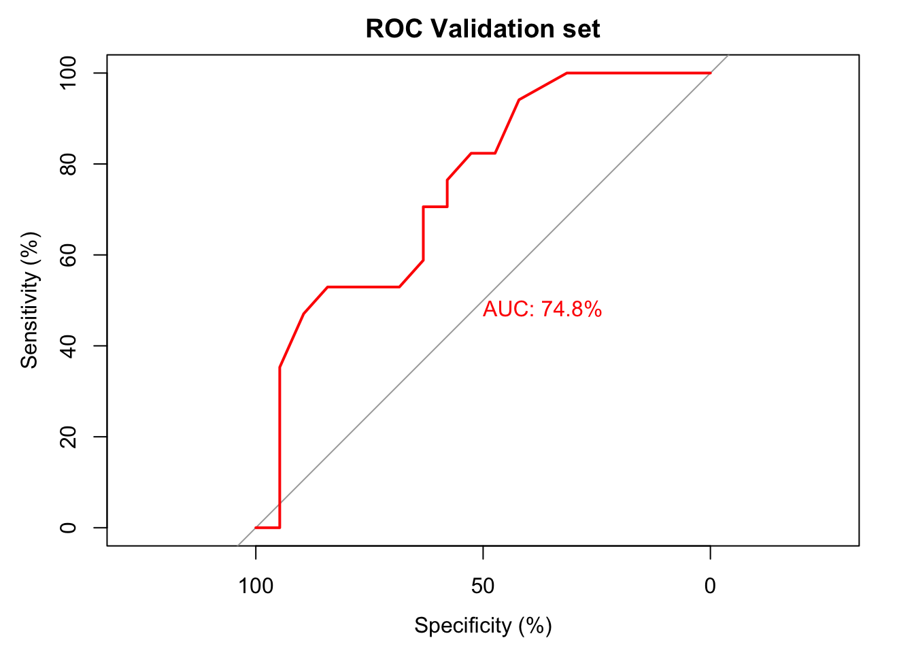
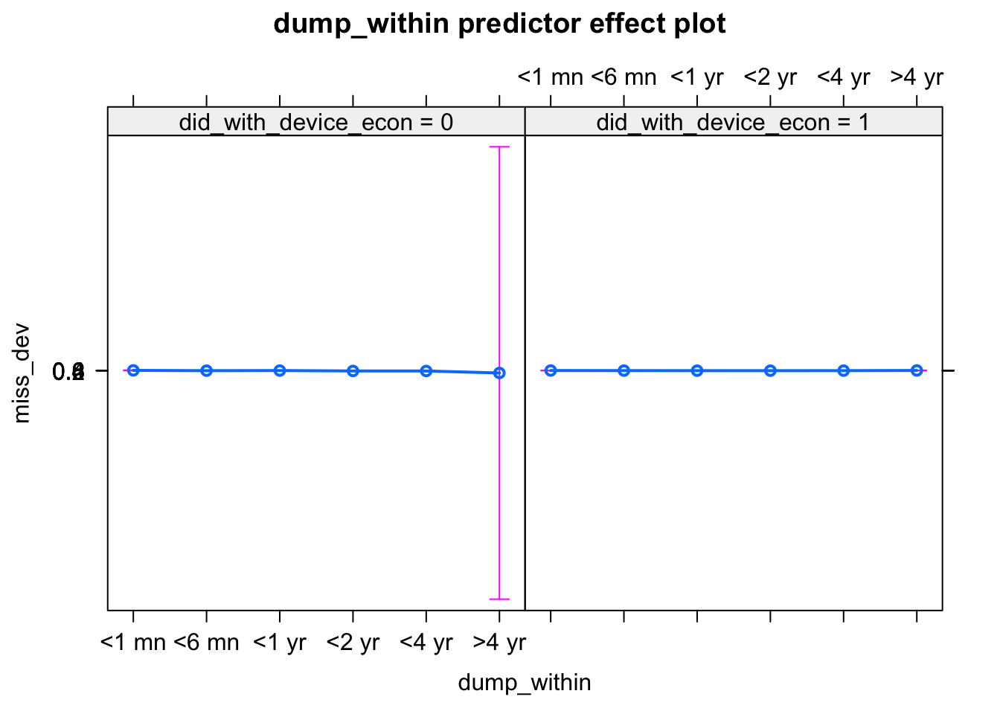
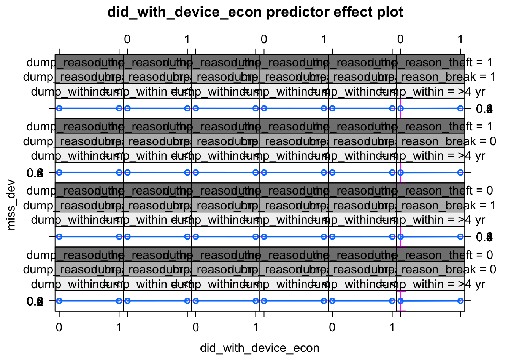
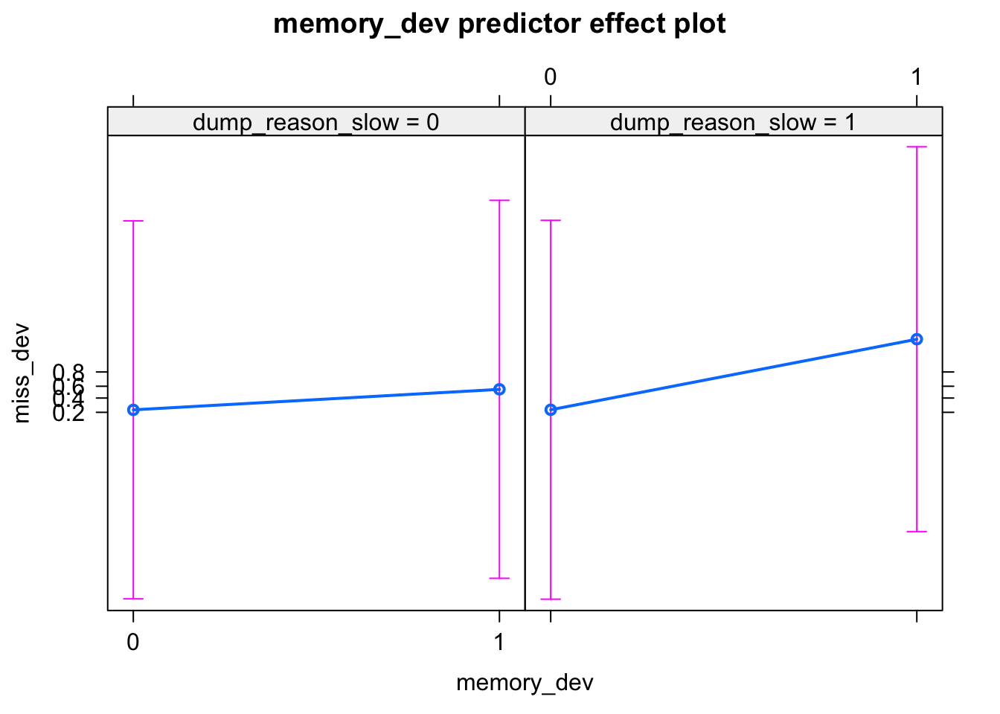
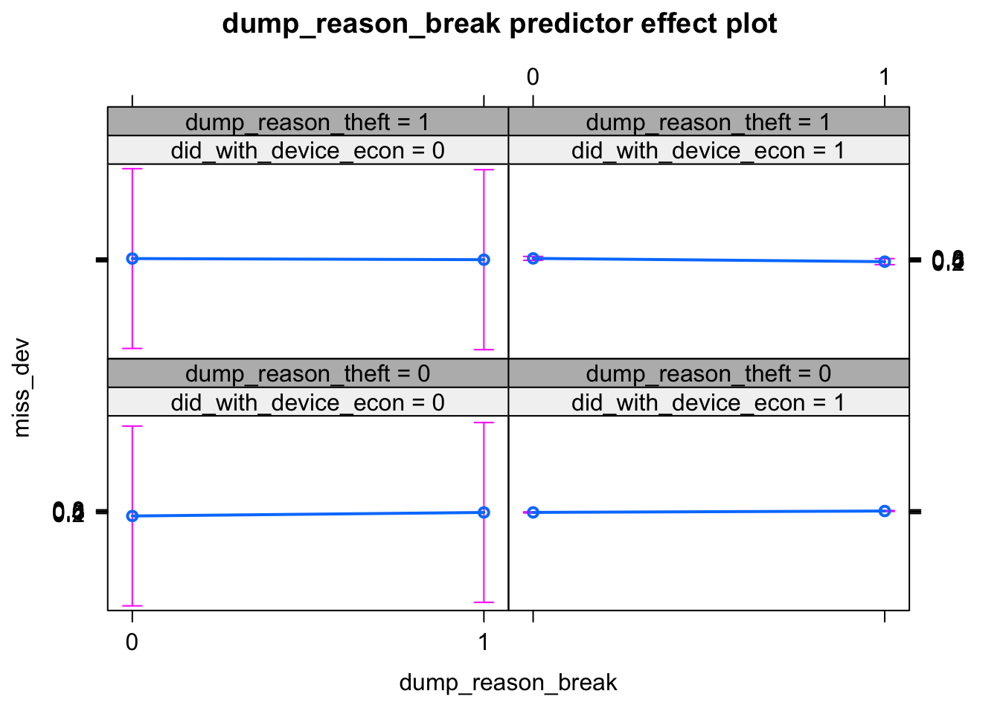
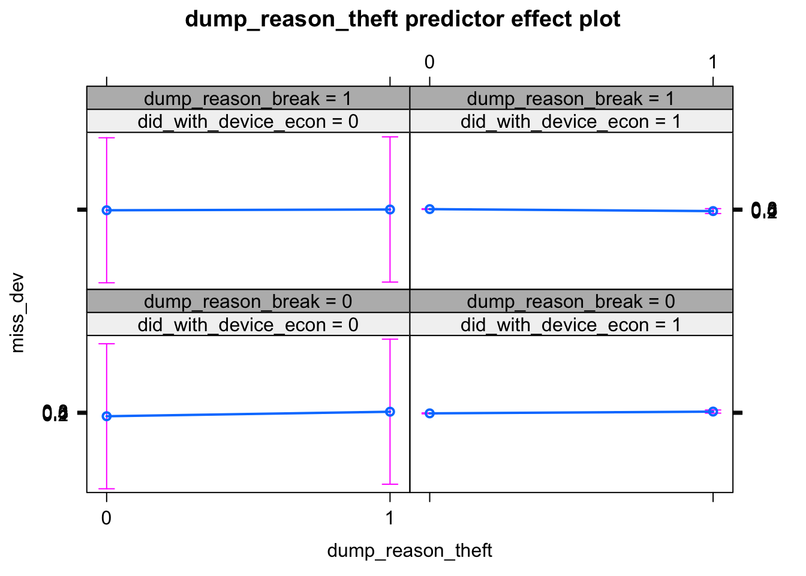
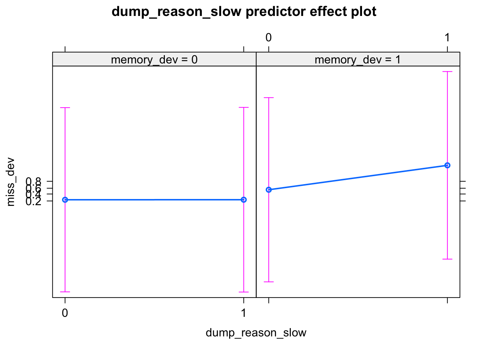

Booklike Summary of E-Waste Work
Chapter 1 Do People Miss Their Device??
##
## Call:
## glm(formula = miss_dev ~ dump_within + did_with_device_econ +
## memory_dev + dump_reason_break + dump_reason_theft + dump_reason_slow,
## family = binomial, data = df)
##
## Deviance Residuals:
## Min 1Q Median 3Q Max
## -1.9330 -0.9671 -0.5300 0.9400 2.0160
##
## Coefficients:
## Estimate Std. Error z value Pr(>|z|)
## (Intercept) -1.77365 0.36676 -4.836 1.32e-06 ***
## dump_within1 -0.48466 0.27502 -1.762 0.07802 .
## dump_within2 -0.27973 0.12457 -2.246 0.02473 *
## dump_within3 -0.22649 0.07637 -2.966 0.00302 **
## dump_within4 -0.09543 0.06711 -1.422 0.15502
## dump_within5 0.08528 0.09866 0.864 0.38735
## did_with_device_econ1 0.55128 0.32105 1.717 0.08596 .
## memory_dev1 1.45145 0.24657 5.887 3.94e-09 ***
## dump_reason_break1 1.02806 0.25616 4.013 5.99e-05 ***
## dump_reason_theft1 1.11285 0.47485 2.344 0.01910 *
## dump_reason_slow1 0.90000 0.38924 2.312 0.02077 *
## ---
## Signif. codes: 0 '***' 0.001 '**' 0.01 '*' 0.05 '.' 0.1 ' ' 1
##
## (Dispersion parameter for binomial family taken to be 1)
##
## Null deviance: 485.33 on 350 degrees of freedom
## Residual deviance: 415.57 on 340 degrees of freedom
## AIC: 437.57
##
## Number of Fisher Scoring iterations: 4This is the fitted model description to investigate what are the factors that predict whether people miss their discarded devices. In the electronic waste field, this can play a large part due to the fact that, \(~50\%\) of our participant responded that they keep the devices in their home, because they feel connected with the devices, miss them, and seem them to be valuable.
The AIC Value was Initially 477. After Stepwise Regression, it came down to 437
The 10 fold cross validation accuracy is below:
suppressWarnings( cross_validated_model <- boot::cv.glm(df,glmfit = backward.model,K = 10))
print((1-cross_validated_model$delta[1])*100)## [1] 78.22936Lets also look at the ROC curve for the the fitted logistic regression model: (A better fit than model without interaction)
null.model <- glm(miss_dev~1,family = binomial(),data = df)
suppressWarnings( Generate_RoC(full_model = full.model,null_model = null.model,df = df,direction = "B",outcome = "miss_dev"))## [1] 351 With a good fit in the model, lets diagnosis our model parameters for multicolineariy. If the VIF (Variance Inflation Factor) is \(>10\) for any predictor, we might be in trouble.
## MIN IVF: 1## MAX IVF: 5## MEAN IVF: 1.278175Values \(>0\) means odd \(>1\) So, that accounts more for YES than NO.
Final Fitted Model:
Description of Variables:
dump_within - helmert coded. So, the coefficients curate (level[k] - avg of levels upto[1..k] ). So, we can get an estimate how each duration is important. dump_within1 means average feeling of missing devices during first month of discarding device. Similarly dump_within2 means average feeling of missing devices during 1-6 of discarding device. dump_within3 means average feeling of missing devices during 6 months - 1 year of discarding device. As we see, log odds keeps increasing (-.48 < -0.28 < -0.23) during this period. Which means, people tend to miss devices more and more as time passes. [The result becomes more and more significant during this period. ] But, this doesnt go unbound. No significant effect for feeling miss_device for time beyond that [This corelates with our guts. That people doesnt feel that much bad after a certain period of time.] But, this is important to note that, not significant, but still implicative that the log-odd keeps increasing as time passes by. Which means, the more time passes, the more people miss their devices.
did_with_device_Y - whether the device is (kept home/dustbin) vs (sold/parts sold/sold to recycler). So, whether any economic or non-economic activity. Simple binary variable. With p<0.1 predicts that if economic activity was done, then device is 43% less likely to be missed later (log odd -0.55)
memory_with_device - whether the participant could write a memory with the device s/he used. This was a qualitative field. Ability to writing a memory with the device increases the odd of missing device * \math{326% (log odd 1.45)}*.
dump_reason_X/Y/Z - reason (theft/break/slow) and whether the device is being missed. The order is important. Theft indicates, the device is still probably being used (just in the state the user was using that). This has the highest log-odd among reasons (1.1). Then comes device broken unfortunately/somehow. Although, the device is not usable, the device is unusable [suddenly from a usable state]. This has a lower odd ration than theft. Which can be explained because the utility was diminished not by some random thief, but the owner. So, although, odd ratio is >1, it is not as much as theft. Finally, when the device has grown slow/unusable, the device is still being missed, significantly, but the odd ration is the lowest in the lot.
Lets look at the effects plot to better understand the individual effects of each predictor:
for (n in c(
"dump_within"
,"did_with_device_econ"
,"memory_dev"
,"dump_reason_break"
,"dump_reason_theft"
,"dump_reason_slow"
# ,"slt_lack_parts"
# ,"slt_lack_repairer"
# ,"rprd_usage_chlng_fault"
# ,"rpr_missing_trait_trust"
# ,"rpr_missing_trait_gender"
# ,"dev_tknto_rec_Y"
# ,"dev_rec_chlng_hard_find"
)){
#print(n)
print(plot(effects::predictorEffect(n,backward.model)))
} Initial Regression Before Running Backward Stepwise Method:
glm(formula = miss_dev ~ gender + age +
division + edu + occupation +
device_count_5_yr + last_dumped_device +
dump_within + did_with_device_econ +
did_with_data_Y + memory_dev +
miss_another + dump_reason_break +
dump_reason_old + dump_reason_new +
dump_reason_theft + dump_reason_slow +
dump_reason_lag + rprd_usage_chlng_No +
rprd_usage_chlng_fault +
rprd_usage_chlng_reluc,
family = binomial, data = df)